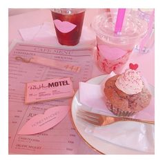
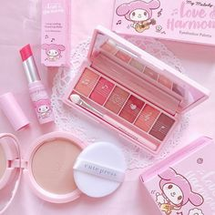

Esta es nuestra nuestra tarea de Html decidimos poner colores pastel
imagenes asthetic y coloridas para que combinaran con la pagina

Tambien son imagenes cute y dulces para hacerla ver mas linda
representando nuestros gustos
